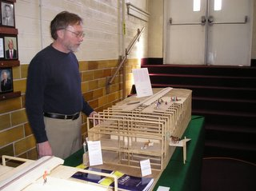
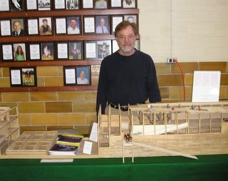

Rob with his model of Noah's Ark This model is O gauge (1:48). (You can work out the dimensions here.)
Door location second deck and amidships. Note the internal ramps both lengthwise (leading to top deck) and across (leading down to lower deck) the vessel. Multiple layers of planking can be seen in the roof and side.

A view of the midsection, showing frame units prepared for assembly.

A rounded bow/stern. Considering the scale of the real Ark, this is a reasonable radius for the bending of thick planks.